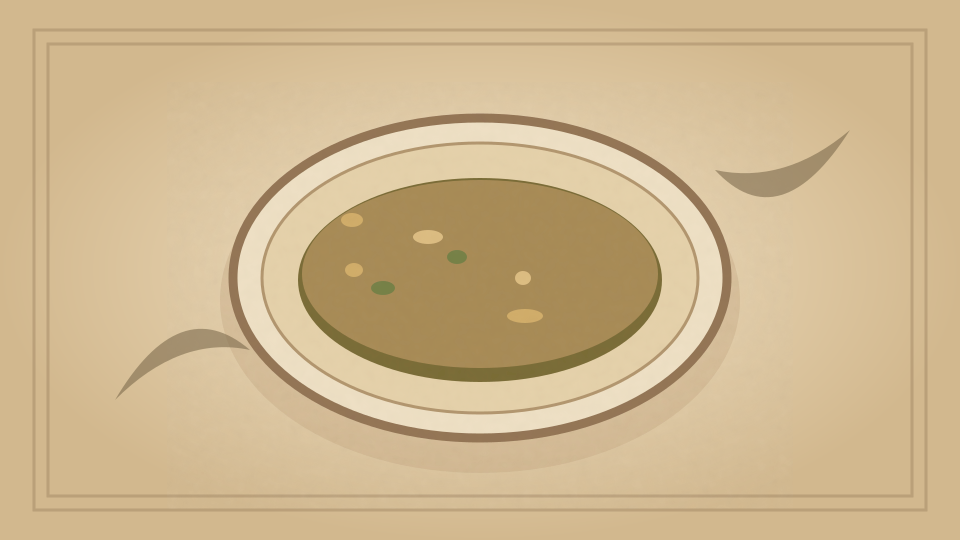

1910 · Fannie Merritt Farmer · SOUPS
Ox-tail Soup
The Boston Cooking-School Cook Book

Historical Recipe
The following text is extracted from the 1910 edition, retaining historical terminology and quantities.
Original Ingredients & Directions
1 small ox-tail 6 cups Brown Stock Carrot ½ cup each, cut in fancy shapes Turnip Onion ½ cup each, cut in small pieces Celery ½ teaspoon salt Few grains cayenne ¼ cup Madeira wine 1 teaspoon Worcestershire Sauce 1 teaspoon lemon juice
1 small ox-tail
6 cups Brown Stock
Carrot
½ cup each, cut in fancy shapes
Turnip
Onion
½ cup each, cut in small pieces
Celery
½ teaspoon salt
Few grains cayenne
¼ cup Madeira wine
1 teaspoon Worcestershire Sauce
1 teaspoon lemon juice
Cut ox-tail in small pieces, wash, drain, sprinkle with salt and pepper, dredge with flour, and fry in butter ten minutes. Add to Brown Stock, and simmer one hour. Then add vegetables, which have been parboiled twenty minutes; simmer until vegetables are soft, add salt, cayenne, wine, Worcestershire Sauce, and lemon juice.
Automatically extracted transcription; editorial verification pending. Historical instructions may not meet modern food-safety standards.